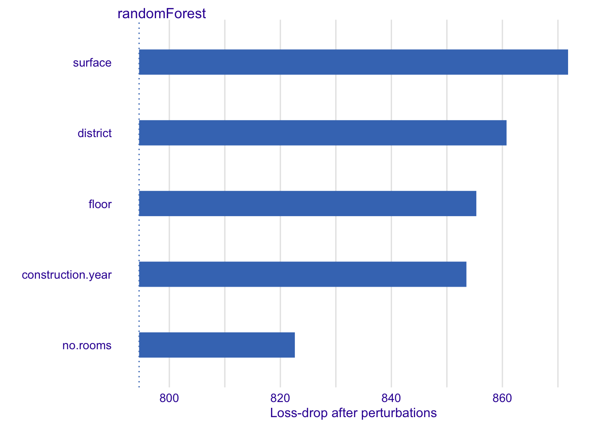
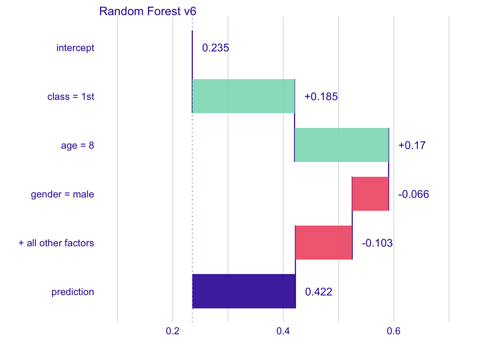

Chapter 15 Feature Importance
Methods presented in this chapter are useful for assessment of feature importance. There are many possible applications of such methods, for example:
- Feature importance scores may be used for feature filtering. Features that are not important may be removed from the model training procedure. Removal of the noise shall lead to better models.
- Identification of the most important features may be used as a validation of a model against domain knowledge. Just to make sure that it’s not like a single random feature dominates model predictions.
- Identification of the most important features may leads to new domain knowledge. Well, we have identified important features.
- Comparison of feature importance between different models helps to understand how different models handle particular features.
- Ranking of feature importance helps to decide in what order we shall perform further model exploration, in what order we shall examine particular feature effects.
There are many methods for assessment of feature importance. In general we may divide them into two groups, methods that are model specific and methods that are model agnostic.
Some models like random forest, gradient boosting, linear models and many others have their own ways to assess feature importance. Such method are linked with the particular structure of the model. In terms of linear models such specific measures are linked with normalized regression coefficients of p-values. For tree based ensembles such measures may be based on utilization of particular features in particular trees, see (Foster 2017) for gradient boosting or (Paluszynska and Biecek 2017a) for random forest.
But in this book we are focused on methods that are model agnostic. The may reason for that is
- First, be able to apply this method to any predictive model or ensemble of models.
- Second, (which is maybe even more important) to be able to compare feature importance between models despite differences in their structure.
Model agnostic methods cannot assume anything about the model structure and we do not want to refit a model. The method that is presented below is described in details in the (Fisher, Rudin, and Dominici 2018). The main idea is to measure how much the model fit will decrease if a selected feature or group of features will be cancelled out. Here cancellation means perturbations like resampling from empirical distribution of just permutation.
The method can be used to measure importance of single features, pairs of features or larger tuples For the simplicity below we describe algorithm for single features, but it is straight forward to use it for larger subsets of features.
15.1 Permutation Based Feature Importance
The idea behind is easy and in some sense borrowed from Random Forest (Breiman et al. 2018). If a feature is important then after permutation model performance shall drop. The larger drop the more important is the feature.
Let’s describe this idea in a bit more formal way. Let \(\mathcal L(f(x), y)\) be a loss function that assess goodness of fit for a model \(f(x)\) while let \(\mathcal X\) be a set of features.
- For each feature \(x_i \in \mathcal X\) do steps 2-5
- Create a new data \(x^{*,-i}\) with feature \(x_i\) resampled (or permutated).
- Calculate model predictions for the new data \(x^{*,-i}\), they will be denoted as \(f(x^{*,-i})\).
- Calculate loss function for models predictions on perturbed data \[ L^{*,-i} = \mathcal L(f(x^{*,-i}), y) \]
- Feature importance may be calculated as difference or ratio of the original loss and loss on perturbed data, i.e. \(vip(x_i) = L^{*,-i} - L\) or \(vip(x_i) = L^{*,-i} / L\).
Note that ranking of feature importance will be the same for the difference and the ratio since the loss \(L\) is the same.
Note also, that the main advantage of the step 5 is that feature importance is kind of normalized. But in many cases such normalization is not needed and in fact it makes more sense to present raw \(L^{*,-i}\) values.
15.2 Example: Titanic
Let’s use this approach to a random forest model created for the Titanic dataset. The goal is to predict passenger survival probability based on their sex, age, class, fare and some other features available in the titanic dataset.
## gender age class embarked country fare sibsp parch survived
## 1 male 42 3rd Southampton United States 7.11 0 0 no
## 2 male 13 3rd Southampton United States 20.05 0 2 no
## 3 male 16 3rd Southampton United States 20.05 1 1 no
## 4 female 39 3rd Southampton England 20.05 1 1 yes
## 5 female 16 3rd Southampton Norway 7.13 0 0 yes
## 6 male 25 3rd Southampton United States 7.13 0 0 yes
## age_cat fare_cat
## 1 (30,50] (0,10]
## 2 (10,18] (10,25]
## 3 (10,18] (10,25]
## 4 (30,50] (10,25]
## 5 (10,18] (0,10]
## 6 (18,30] (0,10]Permutation based feature importance can be calculated with the feature_importance{ingredients}. By default it permutes values feature by feature.
Instead of showing normalized feature importance we plot both original \(L\) and loss after permutation \(L^{*,-i}\). This way we can read also how good was the model, and as we will see in next subsection it will be useful for model comparison.
library("ingredients")
fi_rf <- feature_importance(explain_titanic_rf)
plot(fi_rf) + ggtitle("Permutation based feature importance", "For Random Forest model and Titanic data")Figure 15.1: Feature importance. Each interval presents the difference between original model performance (left end) and the performance on a dataset with a single feature perturbed
It’s interesting that the most important variable for Titanic data is the Sex. So it have been ,,women first’’ after all. Then the three features of similar importance are passenger class (first class has higher survival), age (kids have higher survival) and fare (owners of more pricy tickets have higher survival).
Note that drawing permutations evolves some randomness. Thus to have higher repeatability of results you may either set a seed for random number generator or replicate the procedure few times. The second approach has additional advantage, that you will learn the uncertainty behind feature importance assessment.
Here we present scores for 10 repetition of the process.
fi_rf10 <- replicate(10, feature_importance(explain_titanic_rf), simplify = FALSE)
do.call(plot, fi_rf10) + ggtitle("Permutation based feature importance", "For Random Forest model and Titanic data")Figure 15.2: Feature importance for 10 replication of feature importance assessment
It is much easier to assess feature importance if they come with some assessment of the uncertainty. We can read from the plot that Age and passenger class are close to each other.
Note that intervals are useful for model comparisons. In the Figure @ref{titanic5} we can read feature importance for random forest, gradient boosting and logistic regression models. Best results are achieved by the random forest model and also this method consume more features than others. A good example is the Fare variable, not used in gradient boosting not logistic regression (as a feature highly correlated with passenger class) but consumed in the random forest model.
fi_rf <- feature_importance(explain_titanic_rf)
fi_gbm <- feature_importance(explain_titanic_gbm)
fi_glm <- feature_importance(explain_titanic_lmr)
plot(fi_rf, fi_gbm, fi_glm)Figure 15.3: Feature importance for random forest, gradient boosting and logistic regression models
15.3 Example: Price prediction
Let’s create a regression model for prediction of apartment prices.
library("DALEX")
library("randomForest")
set.seed(59)
model_rf <- randomForest(m2.price ~ construction.year + surface + floor +
no.rooms + district, data = apartments)A popular loss function for regression model is the root mean square loss \[ L(x, y) = \sqrt{\frac1n \sum_{i=1}^n (x_i - y_i)^2} \]
## [1] 193.8477Let’s calculate feature importance
explainer_rf <- explain(model_rf,
data = apartmentsTest[,2:6], y = apartmentsTest$m2.price)
vip <- variable_importance(explainer_rf,
loss_function = loss_root_mean_square)
vip## variable dropout_loss label
## 1 _full_model_ 794.5552 randomForest
## 2 no.rooms 822.6120 randomForest
## 3 construction.year 853.5165 randomForest
## 4 floor 855.3036 randomForest
## 5 district 860.7501 randomForest
## 6 surface 871.8285 randomForest
## 7 _baseline_ 1130.2765 randomForestOn a diagnostic plot is useful to present feature importance as an interval that start in a loss and ends in a loss of perturbed data.

15.4 More models
Much more can be read from feature importance plots if we compare models of a different structure.
Let’s train three predictive models trained on apartments dataset from the DALEX package. Random Forest model (Breiman et al. 2018) (elastic but biased), Support Vector Machines model (Meyer et al. 2017) (large variance on boundaries) and Linear Model (stable but not very elastic).
Presented examples are for regression (prediction of square meter price), but the CP profiles may be used in the same way for classification.
Let’s fit these three models.
library("DALEX")
model_lm <- lm(m2.price ~ construction.year + surface + floor +
no.rooms + district, data = apartments)
library("randomForest")
set.seed(59)
model_rf <- randomForest(m2.price ~ construction.year + surface + floor +
no.rooms + district, data = apartments)
library("e1071")
model_svm <- svm(m2.price ~ construction.year + surface + floor +
no.rooms + district, data = apartments)For these models we use DALEX explainers created with explain() function. These explainers wrap models, predict functions and validation data.
explainer_lm <- explain(model_lm,
data = apartmentsTest[,2:6], y = apartmentsTest$m2.price)
vip_lm <- variable_importance(explainer_lm,
loss_function = loss_root_mean_square)
vip_lm## variable dropout_loss label
## 1 _full_model_ 282.0062 lm
## 2 construction.year 281.9007 lm
## 3 no.rooms 292.8398 lm
## 4 floor 492.0857 lm
## 5 surface 614.9198 lm
## 6 district 1002.3487 lm
## 7 _baseline_ 1193.6209 lmexplainer_rf <- explain(model_rf,
data = apartmentsTest[,2:6], y = apartmentsTest$m2.price)
vip_rf <- variable_importance(explainer_rf,
loss_function = loss_root_mean_square)
vip_rf## variable dropout_loss label
## 1 _full_model_ 799.9382 randomForest
## 2 no.rooms 827.8470 randomForest
## 3 construction.year 852.1447 randomForest
## 4 district 857.3774 randomForest
## 5 floor 874.5364 randomForest
## 6 surface 898.5794 randomForest
## 7 _baseline_ 1104.9754 randomForestexplainer_svm <- explain(model_svm,
data = apartmentsTest[,2:6], y = apartmentsTest$m2.price)
vip_svm <- variable_importance(explainer_svm,
loss_function = loss_root_mean_square)
vip_svm## variable dropout_loss label
## 1 _full_model_ 960.1219 svm
## 2 district 902.5403 svm
## 3 no.rooms 956.8193 svm
## 4 construction.year 1010.1792 svm
## 5 floor 1041.8232 svm
## 6 surface 1061.1809 svm
## 7 _baseline_ 1248.4173 svmLet’s plot feature importance for all three models on a single plot.
Intervals start in a different values, thus we can read that loss for SVM model is the lowest.
When we compare other features it looks like in all models the district is the most important feature followed by surface and floor.

There is interesting difference between linear model and others in the way how important is the construction.year. For linear model this variable is not importance, while for remaining two models there is some importance.
In the next chapter we will see how this is possible.
15.5 Level frequency
What does the feature importance mean? How it is linked with a data distribution.
References
Foster, David. 2017. XgboostExplainer: An R Package That Makes Xgboost Models Fully Interpretable. https://github.com/AppliedDataSciencePartners/xgboostExplainer/.
Paluszynska, Aleksandra, and Przemyslaw Biecek. 2017a. RandomForestExplainer: A Set of Tools to Understand What Is Happening Inside a Random Forest. https://github.com/MI2DataLab/randomForestExplainer.
Fisher, Aaron, Cynthia Rudin, and Francesca Dominici. 2018. “Model Class Reliance: Variable Importance Measures for Any Machine Learning Model Class, from the ’Rashomon’ Perspective.” Journal of Computational and Graphical Statistics. http://arxiv.org/abs/1801.01489.
Breiman, Leo, Adele Cutler, Andy Liaw, and Matthew Wiener. 2018. RandomForest: Breiman and Cutler’s Random Forests for Classification and Regression. https://CRAN.R-project.org/package=randomForest.
Meyer, David, Evgenia Dimitriadou, Kurt Hornik, Andreas Weingessel, and Friedrich Leisch. 2017. E1071: Misc Functions of the Department of Statistics, Probability Theory Group (Formerly: E1071), Tu Wien. https://CRAN.R-project.org/package=e1071.